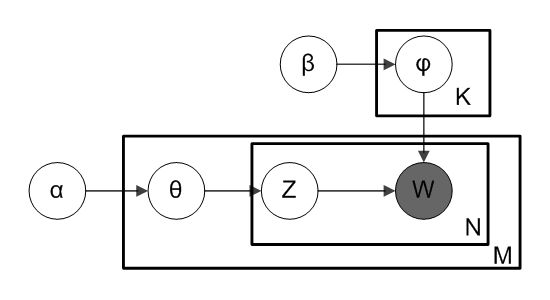
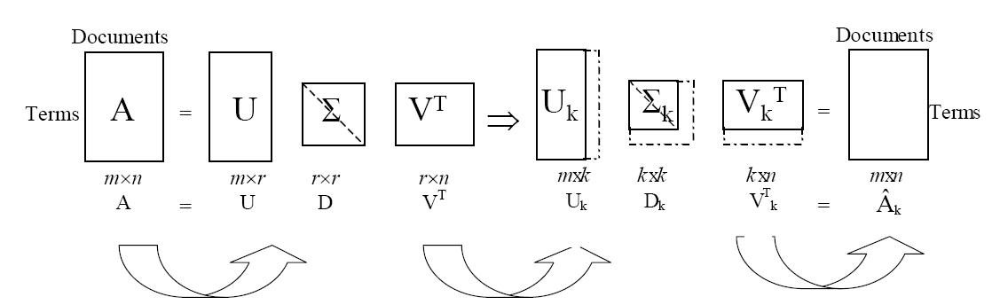

gensim
Topic Modelling for Humans
An overview by Yanir Seroussi
yanirseroussi.com | @yanirseroussi | linkedin.com/in/yanirseroussi
Quick bio
Originally a software engineer:
- BSc CompSci Technion
- Intel, Qualcomm, Google
Converted to a data scientist:
- Monash PhD: text mining and user modelling
- Giveable → Hynt: recommender systems, data scientist, tech lead with many hats
Over the last year:
- Data science consulting/contracting
- Work on own projects
My Python history highlights
- 2010
- Converted Perl scripts to Python to impress Google
- Early 2012
- First Kaggle competition using Python and scikit-learn
- Late 2012
- Full-time Python: Django et al., first gensim experience
- 2013
- Got my head around Fabric, pandas
- 2014
- Life changed by IPython notebook
- 2015
- First taste of Theano, first SyPy talk
enough about me, let's talk about...
gensim
Topic modelling...

Source: Wikipedia
- for each topic t, draw word distribution φ(t) ~ Dirichlet(β)
- for each document d:
- draw a topic distribution θ(d) ~ Dirichlet(α)
- for each word index i in document d:
- draw a topic z(d, i) ~ Categorical(θ(d))
- draw the word w(d, i) ~ Categorical(φ(z(d, i)))
...for humans *

* who speak Python
What is topic modelling?
A topic model is a type of statistical model for discovering the abstract "topics" that occur in a collection of documents.
- Every topic is a distribution (weighted list) over words
- Every document has a distribution over topics
GIGO:
- Topics don't necessarily make sense
- Words don't have to be words
Topic modelling by example

What are topic models good for?
- Exploring large text corpora
- Information retrieval: find documents matching a query
- Similarity and clustering
- Recommender systems
- And much more...
Gensim topic models & other cool things
1970s: TfidfModel
Not really a topic model, but still useful
TF-IDF is the product of:
- TF: term frequency in a document
- IDF: inverse document frequency of term in corpus
Intuition: give high weight to words that are topic-specific
1980-90s: LsiModel
LSI/A: latent semantic indexing/analysis
Singular value decomposition of the frequency/tf-idf matrix, followed by dimensionality reduction
Intuition: denoise to extract latent factors/topics

Source: Liqiang Guo
2000s: LdaModel, HdpModel
- LDA: latent Dirichlet allocation
- Probabilistic extension of LSI, as seen before
- HDP: hierarchical Dirichlet process
- Nonparametric version of LDA – no more setting a fixed number of topics
Intuition: becomes clear when you get into Bayesian stats
2010s: Word2Vec, Doc2Vec
Word2Vec: representing words as vectors
Not a classic topic model, inspired by deep learning
Claim to fame:
- woman - man + king = queen
- Paris - France + Italy = Rome
- breakfast cereal dinner lunch – cereal doesn't fit
Other cool things
- Fast: word2vec implementation faster than optimised C
- Scalable:
- Distributed algorithms
- May run in constant memory on a single machine
- Production-ready: comes with its own similarity server
- Handy corpus and similarity handling utils